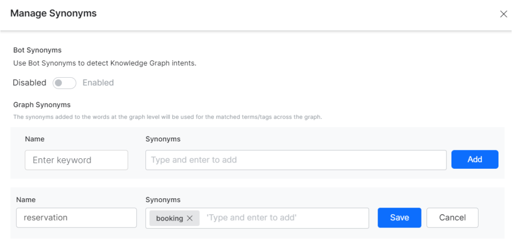
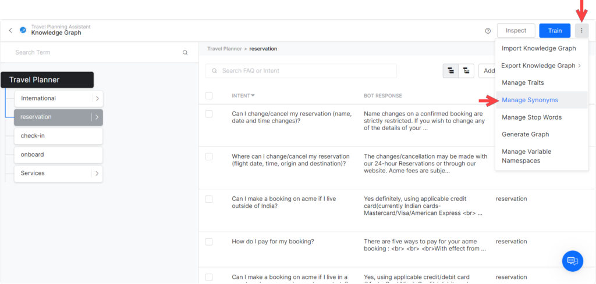
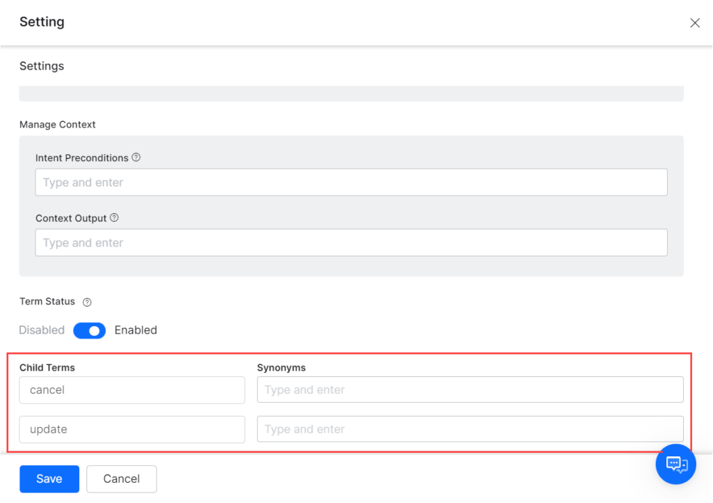
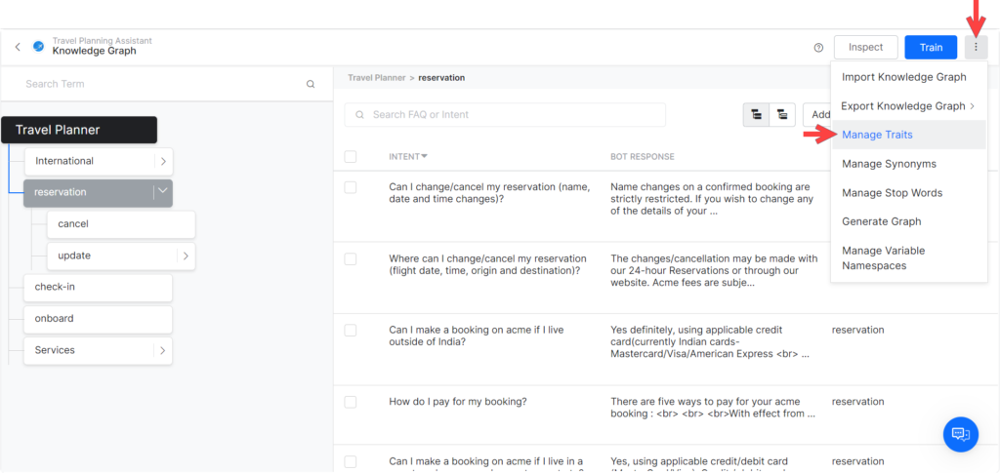
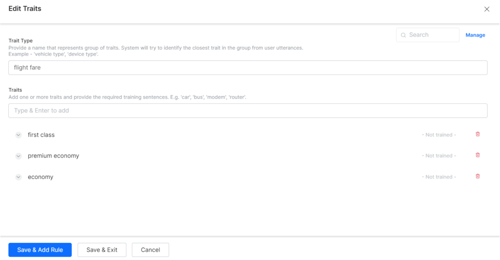
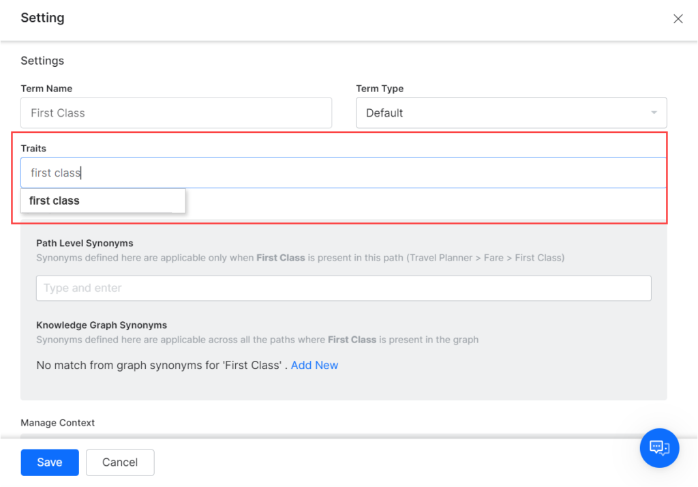
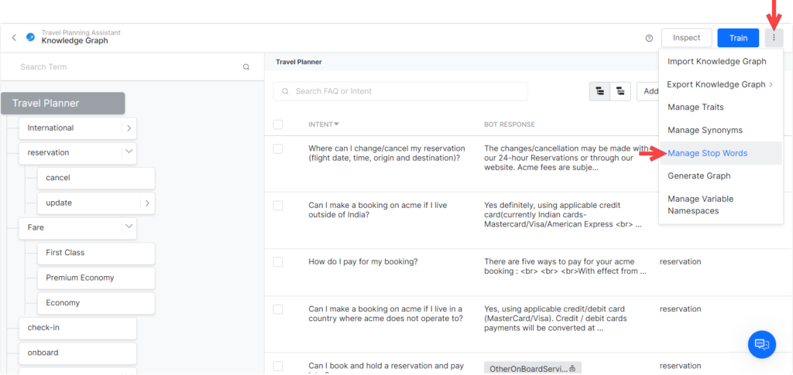
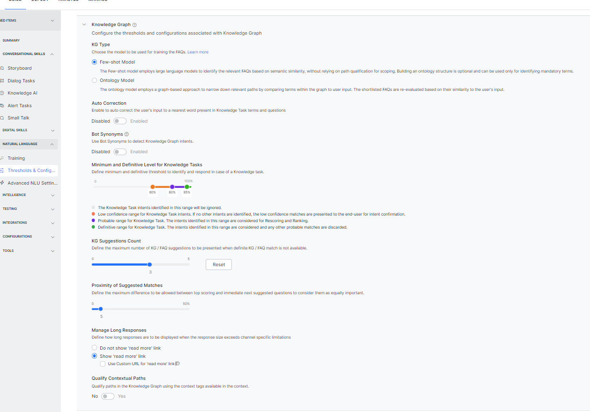
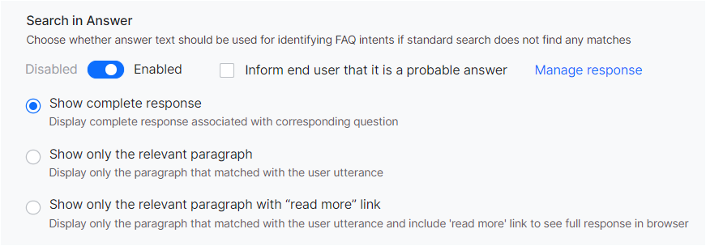

To add Global synonyms, click Edit then Add under Knowledge Graph Synonyms and enter them.
Note
Press Enter after typing each synonym in the Synonyms box. If you type multiple synonyms without pressing Enter after each synonym, all the synonyms are considered as a single entity, even if they are separated by spaces.

Note
These Knowledge Graph Synonyms can also be accessed from the Manage Synonyms option under the more options icon on the top-right of the Knowledge Graph page.

- You can use Bot Synonyms in the identification of KG terms. This option can be enabled either from the Threshold and Configurations or from More Options > Manage Synonyms.
Once enabled, the bot-level synonyms that match with KG terms (or tags) are automatically displayed under the Bot Synonyms heading in the Synonyms section and are used by the KG engine. The Bot Synonyms are used similar to that of KG graph level synonyms, for path qualification and for question matching. When a node matches both with a bot synonym and a bot concept, the bot concept takes priority.
- To add synonyms for a child node, enter them in the Synonyms box next to the Child Terms listed at the bottom of the settings window.

Traits
You can create traits with common user utterances and then add them to the relevant terms in your Knowledge Graph. To know more about Traits, click here.
Traits are common across the XO Platform. If you have created Traits from the Natural Language section they are available for use here as well.
To create a trait, follow the below steps:
- On the top-right of the Knowledge Graph window, click the more options icon and then select Manage Traits.

- On the Manage Traits window, click New Trait.
- In the Trait Type and Trait Name field, enter a relevant name for the trait. For example, Flight Fare.
- In the Utterances field, enter all the utterances that you want to include in the trait. Examples of the Issues trait: First Class, Premium Economy, Economy, etc.
- Click Save & Add Rule or Save & Exit.

After you create a trait, you can assign it to multiple nodes in the Knowledge Graph.
To add a trait to a node/term, follow the below steps:
- On the top-left of your Knowledge Graph, hover over the terms to which you want to add the trait.
- Click the gear icon to open the Settings window.
- Select the name of a trait from the Trait dropdown list and click Save.
Note
Adding a trait to a node doesn't add it to other nodes with the same name. You must add traits to each relevant node separately.

Context
You can Manage Context for the terms and tags by setting:
- Intent Precondition – the context that should be present as a qualifier for this node or tag.
- Context Output – the context that should be populated to signify the execution of this task.
Post the release of v8.0 of the Platform, context can be enabled for Organizer nodes as well. Enabling the Manage Context option allows you to set the context precondition and context output mentioned above. Click here for more on Context Management.
Note
Enabling the Manage Context option will not emit the term/node name by default.
Stop Words
Stop words present in the user utterance are discarded for scoring even if the stop word is used to define a node (or node synonyms).
The Knowledge Graph has a language-specific predefined set of stop words. This list can be customized to suit your requirements.
To edit the stop words list, follow the below steps:
- From the Knowledge Graph page, click on the more options icon and select Manage Stop Words.
- From the Manage Stop Words window, delete or add stop words.

Training Process
After you complete creating/editing the Knowledge Graph, click the Train button on the top-right of the Knowledge Graph window. When you perform this action, all the paths, synonyms, and question-answer sets are sent to the Graph DB engine.
Note
After every change that you make to the Knowledge Graph such as adding synonyms to a term or editing the name of a term, you must click the Train button for the changes to reflect in the bot responses.
The training fails if any single node has more than 100 questions. This limit was introduced in v7.3 to make the Knowledge Graph more efficient by improving the response times. In such failure cases, you can Download Errors CSV file which lists the path with more than 100 questions. You can use this file to rectify your Knowledge Graph.
Testing
When you complete creating the Knowledge Graph and training it, we recommend that you interact with the assistant and ask questions connected to the Knowledge Graph. Test the responses by using a variety of utterances so that you can identify missing terms, questions, alternative questions, synonyms, and traits. Learn more about utterance testing.
Thresholds & Configurations
To train and improve the performance, Thresholds and Configurations can be specified for all three NLP engines – FM, KG, and ML. You can access these settings from Natural Language > Training > Thresholds & Configurations.
Note
If your VA is multilingual, you can set the Thresholds differently for different languages. If not set, the Default Settings will be used for all languages. This feature is available from v7.0 onwards.
The settings for the Knowledge Graph engine are discussed in detail in the following sections.
Explore Thresholds and Configurations
To navigate to Thresholds and Configuration, please follow the steps below:
- Open the VA for which you want to configure Knowledge Graph settings.
- Hover over the left pane and click Natural Language > Training.
- Click the Thresholds & Configurations tab.
- Below is a detailed discussion about the Knowledge Graph section on this page.

Here are the features that you will find in this section of the Platform:
- Auto-Correction will spell correct the words in the user input to the closest matching word from the VA’s Knowledge Graph domain dictionary. Knowledge Graph domain dictionary comprises the words extracted from Knowledge Graph’s questions, alternate questions, nodes, and synonyms.
- Bot Synonyms will enable the XO Platform to use the Bot Synonyms in Knowledge Graph as well. Inclusion of Bot Synonyms for intent detection by the KG engine requires training. Click Proceed when prompted to enable this setting and initiate training.
- Lemmatization using Parts of Speech will enable the use of parts of speech associated with the words in the utterance to lemmatize.
- Path Coverage can be used to define the minimum percentage of terms in the user’s utterance to be present in a path to qualify it for further scoring. The default setting is 50% i.e. at least half of the terms in the user utterance should match the node names and terms.
- Minimum and Definitive Level for Knowledge Graph Intent allows you to set the confidence levels for a Knowledge Graph intent. You can view and adjust the confidence level percentages for the graph in one of three ranges:
- Definitive Range – Matches in this range (green area) are picked and any other probable matches are discarded, default set to 93-100%.
- Probable Range – Matches in this range (dark gray area) are considered for re-scoring and ranking, by default set to 80-93%
- Low Confidence Range – If no other intents have matched, low confidence matches (orange area) are presented to end-user for intent confirmation, by default set to 60-80%
- Not Matching an Intent – The light gray area represents the knowledge graph intent NLP interpreter confidence levels as too low to match the knowledge graph intent, default set to 60%.
- KG Suggestions Count: Define the maximum number of KG/FAQ suggestions (up to 5) to be presented when a definite KG intent match is not available. Default set to 3.
- Proximity of Suggested Matches: Define the maximum difference (up to 50%) to be allowed between top-scoring and immediate next suggested questions to consider them as equally important. Default set to 5%. This applies to the matches in the probable range.
- Manage Long Responses when the response size exceeds channel-specific limitations. You can choose to truncate the response or display the full response with a read more link. Read More link is included at the end of the message. On selecting this link, the full response is opened as an answer in the browser. The URL to open the long response in a web browser is set by default by the Platform. But you can provide a custom URL, too.
- Search in Answer for the qualifying FAQs.
- Qualify Contextual Paths in the Knowledge Graph using the context tags available in the context. Enabling this option will ensure that the paths are shortlisted using terms or tags from the context. These tags can come from previous matched paths or intent or custom-defined tags.
The Platform also offers some advanced configurations. Learn more.
Search in Answer
This feature enables identifying FAQs by searching the user input against the answer section, instead of only matching with questions. This is a fallback mechanism only i.e. search in the answer section will be done only if no FAQs are identified from questions.
Note
This feature is not supported in all languages, refer here for details.
When the Search in Answer flag is enabled, the Knowledge Graph engine considers the answer text for identifying the intents also.
Once this option is enabled, you can specify whether to Inform the end-user that the answer is a probable answer. If selected a Standard Message to the effect is displayed, which can be customized using the Manage Response link. Learn more.
There are three ways in which you can render the response:
- Show Complete Response: Full response is sent as the answer to the user.
- Show only the Relevant Paragraph: Only the relevant paragraph from which the question was identified is sent as the response.
- Show only the Relevant Paragraph with Read More link: Only the relevant paragraph from which the question was identified is sent as the response.
An additional Read More link is included at the end of the message. On selecting this link, the full response is opened as an answer in the browser. The URL to open the long response in a web browser is set by default by the Platform. But you can provide a custom URL (see below for details).

Custom URL Configuration
By default, the URL to open the long response in the web browser is set by the Platform. You have an option to provide a custom URL for rendering the FAQ answers.
The Platform will call the provided URL with details of the relevant message template (template id) and other necessary information.
The following API gives the full information of the FAQ:
URL: https://{{host-name}}/api/1.1/public/users/{{userId}}/faqs/resolvedResponse/{{respId}}
Method: get
Headers: {auth : JWT}
Sample Response:
{
"response": "You can contact our Branch officials wherein you have submitted your documents.If the documents are in order, the account will be opened within 2 working days.",
"primaryQuestion": "How to check the status of my account opening?"
}
Lemmatization
Lemmatization in linguistics is the process of grouping together the inflected forms of a word so they can be analyzed as a single item, identified by the word’s lemma, or dictionary form. Using Parts of Speech information from the user utterance in the process of lemmatization can improve identifying a more accurate FAQ.
Following are some examples of the phrases as recognized by the KG engine with and without using parts of speech:
| USER UTTERANCE
|
NOT USING POS
|
USING POS
|
| What is my outstanding booking invoice balance
|
outstand
book
|
outstanding
booking
|
| I am filing for a visa so that I can travel
|
file
|
filing
|
| What happens if my luggage exceeds the maximum weight? ?
|
, happen
exceed
|
happens
exceeds
|
{kind=link}
{kind=link}
{kind=link}
{kind=link}
{kind=link}
{kind=link}
{kind=link}
{kind=link}
{kind=link}
{kind=link}
{kind=link}
{kind=link}
{kind=link}